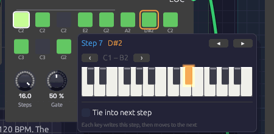

Step Sequencer
Module ID seq.step · Category Utility
 Green steps play, dark steps rest; the outlined step is the one sounding now. A tied step reaches into the next one: here step 4 into 5, 8 into 9, and 15 into 16.
Green steps play, dark steps rest; the outlined step is the one sounding now. A tied step reaches into the next one: here step 4 into 5, 8 into 9, and 15 into 16.
The Step Sequencer plays a repeating pattern of up to 16 notes. Each clock pulse moves it one step along, and each step sends out its own pitch, a gate if the step is switched on, and a velocity. Patch Pitch into an oscillator and Gate into an envelope, and a Clock turns it into a bass line, an arpeggio or a riff.
The pattern lives on the node itself: a grid of step buttons with each step's note name underneath. Ties join a step to the next one for held notes and legato lines.
Inputs
| Port | Signal Type | Description |
|---|---|---|
| Clock | Gate (Green) | Each rising edge advances one step |
| Reset | Gate (Green) | A rising edge jumps back to step 1 |
| Run | Gate (Green) | Steps advance only while this is high. With nothing patched, the sequencer runs |
Outputs
| Port | Signal Type | Description |
|---|---|---|
| Pitch | Control (Orange) | The current step's note as V/Oct. Middle C (C4) is 0.0, the same as the Keyboard and MIDI modules |
| Gate | Gate (Green) | High for each step that's switched on, for Gate of the step. Stays high across a tie |
| Velocity | Control (Orange) | The current step's velocity, 0 to 1 |
| Step | Control (Orange) | The current position as a ramp: 0 on the first step, 1 on the last |
| EOC | Gate (Green) | End of cycle: a 1 ms pulse each time the pattern comes round |
Parameters
| Control | Range | Default | Description |
|---|---|---|---|
| Steps | 1 – 16 | 8 | How many steps play before the pattern loops |
| Gate (Gate Length) | 1 – 100% | 50% | How long each gate stays high, as a share of the step. 100% holds it until the next clock |
| Dir (Direction) | Fwd / Bwd / P-P / Rnd | Fwd | Playback order |
| Gate of (Gate Mode) | Step / 100 ms | Step | What Gate is a share of: the time between clock pulses, or a fixed 100 ms |
Each of the 16 steps also stores a note (default C4), a gate on/off (default on), a tie (default off) and a velocity (default 100 of 127). Patches save all of them.
Programming a pattern
The grid shows one button per active step, in rows of eight. Steps beyond Steps are hidden, not lost: turn Steps back up and they return as you left them.
- Click a step to switch its gate on (green) or off (dark). An off step is a rest: Pitch still moves to its note, but no gate fires.
- Shift + click a step to tie it into the next step. A bar joins the two. Shift + click again to untie.
- Drag a step up or down to change its note, a semitone for every few pixels. The note it will land on shows above the step as you drag. Hold Shift while dragging to move by whole octaves. A drag is one undo step, however far it goes.
- Right-click a step to open its piano (below).
While the patch plays, the current step is drawn brighter, with a white outline.
Writing a melody on the piano

E2, G2 and A2 have just gone into steps 4 to 6. Step 6 was a rest, and playing a note on it switched it on. The orange outline on step 7 shows where the next key will land.Right-click a step and a two-octave piano opens under it, with the step's note lit. Click a key and three things happen: the step takes that note, the step switches on if it was a rest, and the outline moves along to the next step. Play a line of keys and you write the melody into the pattern one step after another, the way step-record works on a hardware sequencer. The piano stays where it opened, so the keys don't move while you play. After the last step it carries on at step 1.
- ◂ ▸ (or the ← → keys) move to the previous or next step without writing anything. Use them to skip a step you want to keep, or to leave a rest as it is.
- ‹ › move the piano down or up an octave. It stays on that octave as you move from step to step.
- Tie into next step ties the step being written, the same as Shift + click.
- Esc, or a click anywhere outside the piano, closes it.
Each note you write is its own undo step, so Ctrl+Z takes back the last key you played.
Velocities can't be edited on the node yet. Every step plays at 100 unless the patch file says otherwise. If you do set them there, patch Velocity into an envelope's Velocity input for accents.
Timing
Clock and gate length
The sequencer has no tempo of its own. It moves on each rising edge at Clock, so the clock you patch in sets the speed, and its swing or irregularity carries through.
Gate sets the length of each note as a share of the step. The sequencer measures the step from the clock itself, as the time between the last two pulses, so the notes follow the tempo. At 60 BPM in quarter notes, 50% is a 500 ms gate; at 120 BPM in sixteenths, it's 62.5 ms. Lower settings give staccato plucks, higher ones legato. If the tempo changes, the next step uses the new length. On a swung clock, whose steps go long, short, long, short, each note is a share of its own step: long on the beat and short off it, so the shuffle keeps its shape.
At 100% the gate stays high right up to the next clock. If the next step plays, the gate drops for a single sample there, so an envelope still starts a new note. If the next step is a rest, the gate falls on that clock.
Until it has seen two clock pulses, the sequencer has no step to measure. The first note after the patch starts uses the 100 ms rule below.
A Reset doesn't count the time since the last pulse as a step. That gap might be a pause while the clock was stopped, so the sequencer keeps the step it measured before.
Ties
A tied step holds its gate across the next clock. If the next step plays, it continues the same note: Pitch moves to the new step's note, but the gate never drops, so an envelope stays in its sustain instead of starting again. Tie several steps in a row for one long note over all of them. Tie two steps with different notes and the second is played legato: one envelope, two pitches, the way a monosynth player slurs a phrase.
A tie into a rest just holds the note to the end of the tied step. A tie on a step that's switched off does nothing.
The next step is whichever plays next, so in Bwd, P-P or Rnd a tie carries into that one, though the bar on the grid always points right. Tie the last step to carry the note round into the first. At the end of a row the bar reaches out of the step's right side and into the left side of the next row's first step.
A held gate (a tie, or Gate at 100%) lets go after two steps' time if no clock comes, so stopping the clock doesn't leave a note hanging.
100 ms gates
With Gate of at 100 ms, Gate is a share of a fixed 100 ms instead of the step: 50% is always 50 ms, whatever the tempo. Short, even triggers like this suit drums. Ties still work in this mode. If a gate is still high when the next note starts, as 99% is at fast tempos, the two notes run together without a new attack.
Patches saved before the sequencer measured its steps open in this mode, so they sound as they always did. Switch them to Step for gates that follow the tempo.
Reset and the first step
Each clock moves to the next step and sounds it, except the first clock after a Reset, which sounds the step the pattern starts from without moving past it. So a reset on the downbeat puts step 1 on the downbeat. The same goes for the first clock after the patch starts playing.
The start step is step 1 in every direction but Bwd, which starts from the last step. Rnd starts on step 1 too, then picks at random from the next clock on.
Directions
| Dir | Order (with 4 steps) | EOC |
|---|---|---|
| Fwd | 1 2 3 4 1 2 3 4 … | After step 4 |
| Bwd | 4 3 2 1 4 3 2 1 … | After step 1 |
| P-P (ping-pong) | 1 2 3 4 3 2 1 2 … | At each end |
| Rnd | A random step on each clock | Never |
Ping-pong doesn't repeat the end steps, so a four-step pattern bounces over six clocks.
Patches
A sequenced voice
[Clock Gate] ──> [Step Sequencer Clock]
[Step Sequencer Pitch] ──> [Oscillator V/Oct]
[Step Sequencer Gate] ──> [ADSR Gate]
[Oscillator Out] ──> [SVF Filter In]
[SVF Filter LowPass] ──> [VCA In]
[ADSR Out] ──> [VCA CV]
[VCA Out] ──> [Audio Output Mono]
Set the Clock's Div to 1/8 or 1/16, switch a few steps off to make rests, and use the Oscillator's Oct knob to move the whole pattern up or down.
Modulation sequences
Pitch is a control signal like any other. Patch it into a filter's Cutoff and each step sets a brightness instead of a note: one octave of cutoff for each octave of pitch. Combine with a second sequencer for melody, both clocked together.
Patterns of different lengths
Two sequencers on the same clock with different Steps settings drift against each other and line up again only every few bars. Eight steps against five repeats every 40 clocks.
[Clock Gate] ──> [Step Sequencer A Clock] (Steps 8)
[Clock Gate] ──> [Step Sequencer B Clock] (Steps 5)
Stop and start
Patch a gate into Run to pause the pattern in place. While Run is low, clocks are ignored and the sequencer stays on its current step.
The Clock's Run and Reset outputs are made for this. Patch them into Run and Reset and the pattern stops with the Clock and starts again from step 1 when it does, including when the Clock follows a DAW's MIDI clock and you press Play there.
Related modules
- Clock: drives the sequencer
- Trigger Sequencer: eight lanes of drum hits from one module, with chained patterns for fills
- Clock Divider: divides the clock, so a sequencer can play once every few bars from its Run and Reset
- ADSR Envelope: shapes each step's note from the Gate output
- Oscillator: plays the Pitch output
- Sample & Hold: stepped values that aren't programmed by hand